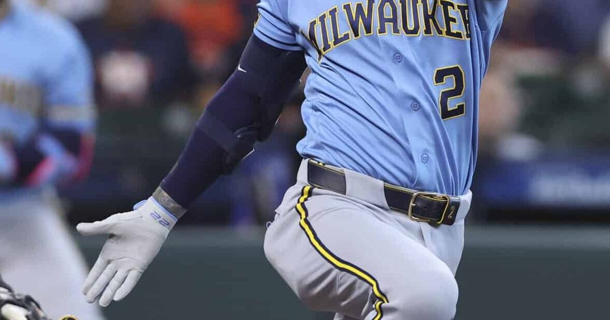

Brewers Beat Dodgers 2-1 to Open the NLCS
Brice Turang's game-tying homer and Luis Lara's go-ahead single gave Milwaukee a 2-1 NLCS Game 1 win over the Dodgers.

Disclosure: this post contains affiliate links. I earn a commission on qualifying purchases.
A Pitcher's Duel With Two Punches of Offense
Game 1 of the 2026 NLCS opened the way ace-vs.-ace matchups are supposed to: Tarik Skubal starting for the Dodgers, a one-run game into the ninth, and one swing for each team's entire offense. Milwaukee took it 2-1 to grab a 1-0 series lead.
How It Happened
Tied in the fourth. Brice Turang's solo homer off Tarik Skubal knotted the game at 1 in the fourth inning — Milwaukee's first run of the series.
The go-ahead in the fifth. Luis Lara's single scored Garrett Mitchell, and that 2-1 lead held the rest of the night.
The Dodgers' Missed Chances
The box score tells the story of Los Angeles' night:
• 9 runners left on base
• 3 double plays grounded into
• The game ended with Mookie Betts flying out in the ninth with two runners aboard
Two runs held up because the Dodgers never came through with men on.
The Bottom Line
Milwaukee did just enough — a homer, a timely single, and a bullpen that slammed the door — while the Dodgers' lineup wasted every opening. Game 1 goes to the Brewers.
Source: Reuters — Brice Turang homers, Brewers edge Dodgers in NLCS opener
Watch
Source: DODGERS vs. BREWERS: NLCS Full Game 1 Highlights (October 11) | 2026 MLB Postseason — MLB on YouTube. Full-game highlights of the 2-1 Brewers win, including Turang's tying homer and Lara's go-ahead single.
Gear up: Milwaukee Brewers / Los Angeles Dodgers jerseys and gear via Fanatics